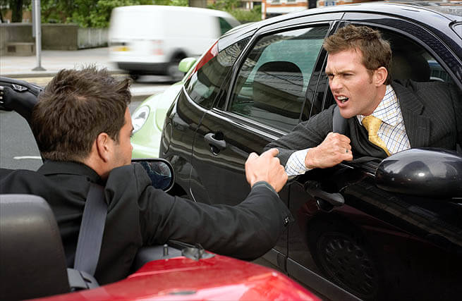

Problema
As cidades enfrentam desafios significativos relacionados ao trânsito, impactando a vida diária das pessoas e gerando consequências sociais e econômicas. Esses problemas incluem a alta densidade de veículos nas vias, ocorrências frequentes de acidentes e violência, a falta de qualidade no transporte público e a inadequação das infraestruturas urbanas. Essas questões, quando vistas em conjunto, contribuem para a deterioração da qualidade de vida e a perda de eficiência nas áreas urbanas.
Excesso de Veículos
Mais do que apenas causar irritação, estresse e cansaço nas pessoas, o trânsito atravancado causa prejuízos de ordem social e econômica. Os engarrafamentos têm seu custo, afinal o tempo gasto neles poderia ser utilizado em atividades mais produtivas.
Trânsito Violento
Ainda pior do que perder seu tempo no trânsito é perder sua própria vida, ou sua saúde e bem-estar. Os números de mortos e feridos em decorrência de acidentes de trânsito no Brasil se equiparam a alguns dos piores conflitos da atualidade.
Transporte Coletivo Precário
O transporte coletivo das cidades brasileiras, entretanto, ainda oferece poucas vantagens em relação ao automóvel. É uma opção de deslocamento mais barata, de uma forma geral. Muita gente também não gosta de dirigir um carro, porque envolve muita atenção e gera stress.
Vias Precárias
Não raro as calçadas não garantem acessibilidade, são muito estreitas, e muitas vez sequer existem. As ruas são esburacadas e mal sinalizadas.